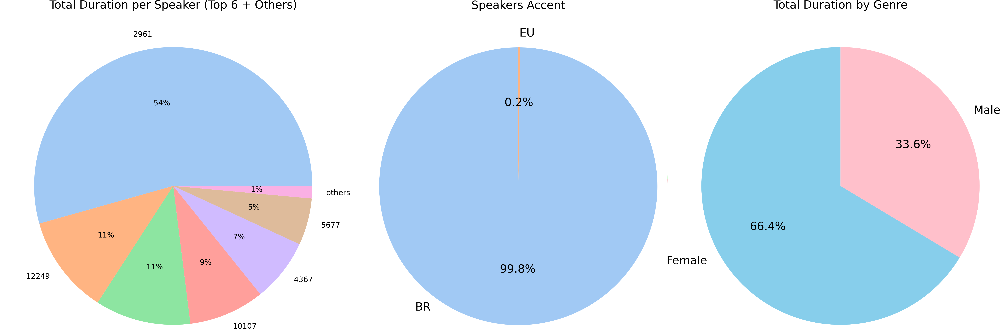
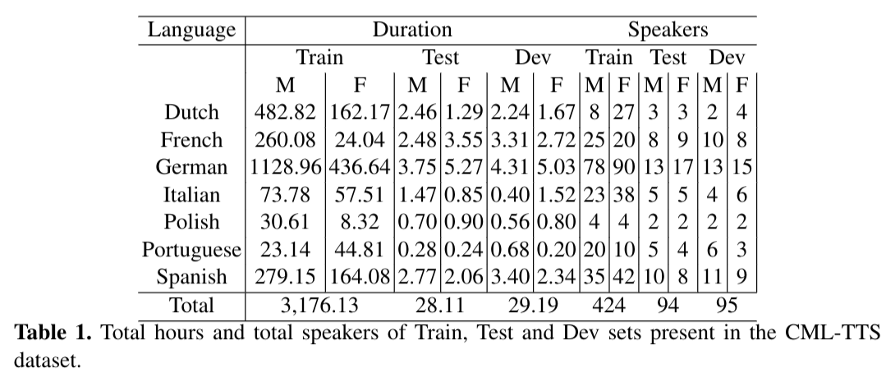

Download
You can download in http://www.openslr.org/146/, or each version separately:
- CML-TTS Dataset Portuguese - MD5: 8c877a4be0eb41f275497609df5a114c
- CML-TTS Dataset Segments - MD5: f529a908aba26a6d891b4fb17ab3125b
Statistics
BRSpeech is a dataset comprising audiobooks sourced from the public domain books of Project Gutenberg, read by volunteers from the LibriVox project. The dataset includes recordings in Dutch, German, French, Italian, Polish, Portuguese, and Spanish, all at a sampling rate of 24kHz. The following figure shows pie charts indicating the percentage of each language's duration (on the left), sample quality percentage (in the center), and the percentage of speakers' gender (on the right).


Portuguese Samples
Audio Samples for CML-TTS Portuguese
| Speaker | Ground Truth | YourTTS |
|---|---|---|
| 4067 | ||
| 6549 | ||
| 11247 | ||
| 12710 | ||
Citation
@InProceedings{Cmltts2023,
title="CML-TTS: A Multilingual Dataset for Speech Synthesis in Low-Resource Languages",
author="Oliveira, Frederico S. and Casanova, Edresson and Junior, Arnaldo Candido and Soares, Anderson S. and Galv{\~a}o Filho, Arlindo R.",
editor="Ek{\v{s}}tein, Kamil and P{\'a}rtl, Franti{\v{s}}ek and Konop{\'i}k, Miloslav",
booktitle="Text, Speech, and Dialogue",
year="2023",
publisher="Springer Nature Switzerland",
address="Cham",
pages="188--199",
isbn="978-3-031-40498-6"
}